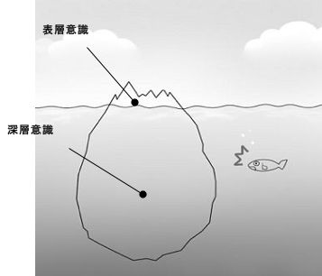

| ２０代で突き抜けろ！ 「１位／１億２０００万人」を獲る方法 | |
| 白石 裕太 | |
| yuta shiraishi (2013) | |
あなたの人生は１００％あなたの思考でできています。
そう言われると、あなたはどう感じるでしょうか？
良いことが起きた時には、自分の望みが叶っている！と思うけれども、悪いことが起きた時には、自分のせいじゃない！と思いたいかもしれません。
ですが、ここではまず「私の人生が１００％私の思考によって創られているとしたら」と考えることから始めてみましょう。
あなたのとって良いことが起きた時、それはあなたが過去に望んだこと。
あなたにとって悪いことが起きた時、それもあなたが過去に望んだこと。
良いこと、悪いことも全て、現実は自分の思考によって創られていると確信した時、あなたは望み通りの自分の人生を自由に創造できるスタートを切ることができるのです。
一章では、「思考は現実化する」とは一体どういうことなのか、詳しく学んでいきます。
私たちは普段の生活の中で、自分が意識するかしないかに関わらず、ありとあらゆることを考えています。例えば、寝不足が続く朝、意識朦朧としながらもかろうじて最後のアラームを消した瞬間。「まだ、眠い」「もう少し寝ていたい」、と思いながらも、最終的にあなたは眠い頭を無理やり起こし、学校、もしくは会社に行く準備をするでしょう。そのまま本能に従って寝てしまうこともできます。ですが多くの場合、いつものようにあなたは目覚め、準備をし、家を出るのです。
「まだ寝ていたい」から、「会社に向かう」、という行動に行きつくまで。そこで一体なにが起こっているのでしょう。
実は、あなたの頭の中で、壮絶なドラマが繰り広げられています。
「まだ寝ていたい」
「遅刻したっていいや・・・」
「・・・でも叱られるのは嫌だ！」
「社会人になったのに遅刻するなんてだらしないし・・・」
「いっそのこと体調不良で休んでしまおうか」
「いや、今日が納期のやるべき仕事があったんだった」
「別に今日やらなくたって死ぬわけじゃないし、いいじゃん」
「きっとだれかがやってくれているよ」
「いや、駄目だ、自分の仕事を途中で投げ出して人に押し付けるのか？！そんな無責任でカッコ悪い奴になり下がるのか？？」
「駄目だ！自分はそんな人間にはならない！だから会社に行く！！」
この朝の一瞬に起こるドラマの主役。それは、あなたの「思考」です。眠い、でも自分と葛藤した結果、あなたは「会社に行く！」と決めました。その結果、起きて準備をし、会社に向かうのです。あなたの思考が発端となって、あなたは行動を起こし、あなたには「会社に間に合う」という現実があるのです。
つまり、私たちの思考と現実の間には非常に密接な関係があります。思考した結果、行動を起こし、それが現実となって現れます。これはつまり、「思考が現実化した」と言えるのではないでしょうか。
あなたの現実は、あなたの思考によってつくられているのです。
思考が現実になるとはいえ、魔法ではありません。なんでも思考さえすれば、すぐに現実になるというわけではないのです。叶えたい現実(望み)の大きさによって、必要な思考の量が違い、望みが大きければ大きいほど、それだけたくさん時間をかけて思考し、行動する必要がある
とイメージして下さい。
例えば、お腹がすいたからラーメンが食べたい！と考えたとします。最寄りのラーメン店に車を走らせ、注文をし、ラーメンが出来あがって口に入るまで、遅くとも１時間もかからないでしょう。インスタントラーメンであれば、５分もあれば可能です。ラーメンを食べるということは、今の日本においてはとても簡単に出来てしまうことなので、ほんのわずかな思考だけで現実にすることができます。
しかし、メジャーリーガーになりたい！と考えたとすると、どうでしょうか。メジャーリーグには世界中から有能な選手が集まってきます。その中で通用する実力を身につけるには、誰であろうと１日では無理です。寝ても覚めても野球の事ばかり考え、練習し続けるという生活を何年も何１０年も続けた人だけが、メジャーリーガーになることができるのです。
才能がないから、叶わないのではありません。思考量と行動量を充分に準備できるか、それだけです。メジャーリーガーになれるだけの思考量と行動量を積み重ねさえすれば、誰でもその夢を実現することができるでしょう。
ではもし、こんなこと望んだ覚えはない！と思うような予想外のアクシデントが起こったらどうでしょう。それもあなたの思考が現実を創ったと言えるのでしょうか。
答えはＹＥＳです。私たちの現実は、全て自分の望み通りになっています。しかしながら私たちは、現実が１００％自分の思考の結果であるとは認識できません。なぜなら私たちが認識できる意識には、限界があるからです。この理由については、第２項で詳しく説明しましょう。
どんな現実にも必ず思考という種があります。「思考」という種に、「行動」という水をやることで、芽が出ます。その行動を習慣レベルまで落とし込み、日常的に水(栄養)を吸収するようになると、どんどん大きな幹に成長していきます。そして、「現実」という実がなるのです。
あなたがヒマワリを育てたかったのに、カボチャが育ってしまった時、本当にヒマワリを収穫したいとすれば、当たり前ですがヒマワリの種を植える必要があります。
つまり、変えたい現実があるとしたら、その根本原因である思考を見直す必要があるということです。
そして、思考するだけではなく、行動しましょう。行動しなければ(水がなければ)、せっかく植えた種も育つことはありません。
望む現実を思考し、そのための行動をする。それが望み通りの現実を創る第一歩です。このサイクルを当たり前に積み重ねることができるレベルになったときには、あなたは自分の望みを自分で実現できるようになっているでしょう！
「思考」という種に「行動」という水を与え続けると、「現実」という実がなる。
Ｑ１． あなたが今、絶対に自分が創り出していると思う、納得のいくことを書き出してみましょう。
(例)希望する企業に就職できたこと。念願の車を購入したこと。初マラソンで完走できたこと。
Ｑ２． あなたが今、どうしても自分が創り出しているとは思えない、納得のいかない事を書き出してみましょう。
(例)資格試験に落ちたこと。車で事故を起こし、入院したこと。
私たちが日常的に行っている「思考」とは、意識の働きのことです。その意識には、「表層意識」と「深層意識」という２種類の意識があります。
表層意識とは、私たちが自分で認識できていると感じる「理性的な意識」のことで、五感(視覚、聴覚、嗅覚、触覚、味覚)を通じて外界を認識します。例えばそれは、「今日の晩御飯は何にしようかな」「時間がないからバスじゃなくタクシーに乗ろう」といった、頭で考えていることです。
それに対し、深層意識は表層以下の深い意識のことをいい、自分で意識的にコントロールすることが難しい無意識の思考です。表層意識が「理性」によってコントロールすることが出来るのに対し、深層意識は「本能」「感情」によって大きく影響され、ひらめきや直感を生み出します。「旅行の前日、ワクワクしすぎて目覚ましより早く目が覚めた」「一目会った相手にいつの間にか好意を持っていた」といったことは、深層意識の働きによるものです。
意識全体に対し、表層意識は全体の５％、深層意識はその大半の９５％を占めています。自分で自分の意識だと認識している表層意識は、実はほんのわずかに過ぎないのです。
この構造を氷山に例えてみましょう。氷山というものは、地表に見える氷の部分は実は氷山全体のほんの一部でしかなく、その大部分は海中に隠れています。つまり実際の氷山は、私たちが地表から確認できるよりもはるかに大きいものなのです。
意識もこれと同じで、自分で認識できる表層意識は意識全体のほんの一部であり、私たちの意識のほとんどは、自分でコントロールすることが難しい深層意識ということです。しばしば、「そんなことは望んでいない！！」といったことが現実に起こってしまうとしたら、実は表層意識ではなく、深層意識で望んでいたことかもしれません。
意識全体によって思考が生まれ、思考によって行動し、その結果現実が創られるならば、現実はこの９５％の深層意識に支配されていると言っても過言ではない のです。

あなたは、頭では良いとわかっているけれど、なんとなく気が向かない、やりたくないといって物事が進まなかった経験はないでしょうか。
例えば、「上司の言うことは至極もっともなのだけれど、この人の言う通りにするのはなんだか嫌だ」と思うとき。この場合、冷静に考えれば、上司が自分のことを思ってアドバイスをくれていることも、上司のほうが知識も経験も自分よりはるかに上なことも、自分にとってのその仕事の重要性も十分理解できています。表層意識では、上司の言うとおりにすべきだとわかっているのです。しかし、その上司が自分の嫌いなタイプだったらどうでしょう。表面的には従っているつもりだったとしても、実際には耳を貸していないかもしれません。深層意識にある「あの人は嫌いだ、あの人の言うことは聞きたくない」という感情が、無意識に邪魔をしているのです。
感情が伴わないことを、人は積極的に取り組むことができません。なぜなら、表層意識に影響する理性よりも、深層意識に影響する感情のほうが、意識全体に与える影響力が大きい からです。
つまり感情(深層意識)は、私たちを動かす非常に大きなエネルギーであると言えます。
思考量として占める割合は少ないけれども、表層意識も非常に重要な役割を果たします。表層意識だけは、直接的に自分の意思でコントロールすることができる
からです。イメージは、あなた自身がチームをまとめる司令塔になったと思ってください。バスケットボールならポイントガード、野球ならキャッチャー。司令塔＝表層意識が、その他の選手＝深層意識へ指示を出し、試合の流れをコントロールするのです。
つまり多くの深層意識たちを自分が向かいたい方向に動かすには、表層意識の舵取りが非常に重要 だということです。仮に、「なんとなくやりたくない」と無意識に深層意識が邪魔をしていたとしても、嫌だろうが何だろうが絶対にやる！と表層意識でより強く決めさえすれば、私たちは動かざるを得ません。
望み通りの現実を創るためには、表層意識でしっかりと舵をとり、深層意識の膨大な思考エネルギーをいかにうまく活用するか、そのことが非常に重要なのです。
表層意識が舵を取り、膨大なエネルギーを持つ深層意識を動かす。
Ｑ１． あなたが長い間努力し続けているものの、なかなか状況が好転しないことはありますか。考えてみましょう。
(例) もっと稼ぎたい。そのためにまずは売上成績で社内の営業Ｎｏ．１になりたい。
Ｑ２． もし自分の中にいるもう一人の自分が、その状況が良くなることを望んでいなかったとしたら、どんな理由が考えられるでしょうか。
(例)仕事で成果が出るともっと自分に仕事が集まってきて、仕事一本になって、自分の自由な時間がなくなるんじゃないか・・・。
私たちの現実を作る種となる「思考」。この思考の力を正しく使うために、「思考」という言葉の意味、定義についてもう少し詳しく説明しましょう。
ここで言う思考とは、本当の意図、と言い換えることができます。
りんご、という誰もが知っている言葉でも、その言葉からある人は真っ赤な丸いりんごをイメージし、ある人はウサギ型に切ったリンゴをイメージし、ある人は○名林檎をイメージするかもしれません。人によって、その言葉の意味するものが違うのです。
つまり現実となるのは、りんごという言葉そのものではなく、各人がイメージしたその言葉の意味するところ です。
例えば、「社長になりたい」という同じ夢があるＡさんとＢさんがいるとします。その夢の根底に、Ａさんは「組織をまとめて、社会に対して多大な貢献をしたい」という思いがありました。Ｂさんは、心の奥では「自分は動かずに人を動かして(楽をして)、人よりも多くお金を手にしたい」と思っていました。
同じ「社長」であっても、Ａさんのような思いを持っている場合は、パワフルで人間力がある頼れるリーダーをイメージします。この思考を常に持ちながら行動をしていくと、Ａさんは色々な場面で人の上に立つ立場を経験するようになり、いずれは、一国一城の主、社長になることができるでしょう。
一方Ｂさんのように「楽をして自分だけ得をしたい」という思いがあると、社長になることはないでしょう。なぜなら、本来社長というものは、自分は動かず楽をして多くのお金がもらえるというような役割ではないからです。このような思いを持ち続けているＢさんは、例えば仕事を辞め、実家暮らしで何もしない日々を過ごしたり、寝たきり介護で(自分は動かずに人から世話をしてもらって)介護保険をもらう、という現実に行き着くかもしれません。
このように、言葉は同じ「社長」であっても、その裏に隠れた「意図」が現実となって現れる ことになります。そして、現実となるのは社長そのものだけでなく、「意図」に当てはまるあらゆるものが現実になります。
つまり「組織をまとめて、社会に対して多大な貢献をしたい」という意図からは、テニス部の部長、バイト先の店長、会社の部長、のような、組織をまとめて社会に対して多大な貢献をする現実が様々な形で現れるのです。
もし、社長になりたい、という目標と矛盾している思いを持ち続けていたとしたら、知らず知らずのうちにあなたの行動も目標に対して矛盾したものとなり、結果的にあなたがその目標を達成することはできません。
どうしても実現させたい目標があるならば、なぜそれを達成したいのか、を何度も何度も自分自身に問いかけましょう。周りの人に質問をしてもらうのも効果的です。自分の本音には、意外と自分では気付きにくいからです。そして、もし目標にそぐわない本音が出てきたとしたら、しっかりと修正しておく必要があります。
目標に沿った「正しい」思考を積み上げることが、望み通りの現実を創るための一番の近道です。
達成したい目標の裏に隠れた「本当の意図」が現実になる。
Ｑ１． あなたがどうしても達成したい目標は何ですか。
(例)年収２０００万！
Ｑ２． 何故、それを達成したいのでしょうか。それを達成して得たいものは何でしょうか？
(例)人や社会に、大きな貢献ができている自分になりたい。人間的成長をしたい。自分で自分の成長を実感したい。
私たちの現実は、必ずしも良いことばかりではないでしょう。病気、借金、失業など、"一見"非常に悪い出来事のように思えることも現実となります。ですが、思考が現実を創ったと考えると・・・。その最悪な状況を、自らが思考していた(望んでいた)、ということになるのです。
例えば、病気。あなたは連日連夜の残業漬けの日々で、ついに体調を崩し、入院することになってしまったとイメージして下さい。寝ても覚めても仕事のことしか考えていなかった生活が一変。食事や身の回りの世話は全て看護師さんがやってくれ、腫れものに触るように周りは皆あなたの体調を気遣ってくれます。仕事もないので、思う存分寝ることもできるし、読みたかった本を読んだり、テレビやＤＶＤを観たりすることもできる。お見舞いに来てくれた会社の同僚からは、「体調を壊すまで頑張った頑張り屋さん」という目で見られ、「しばらくはゆっくり休んでね」、と励ましの言葉をもらえる。
例えば、失業。不況の影響で、あなたは１０年間勤めた会社との契約を切られてしまったとイメージして下さい。次の仕事がすぐには見つからず、まずは実家に戻りました。あまり好きでもない仕事を、生活のために嫌々やっていた毎日。ところが、実家では寝るところも食事も十分にあり、失業保険を貰っているので当分はある程度自由に使えるお金もある。いつでも、地元の仲の良い友人たちと会える。周りの人からは「あなたは悪くない、会社が悪いから、社会情勢が悪いから」と、時代に翻弄された"悲劇の"ヒーロー扱いをされる。
どうでしょうか。たまにはこんなこともありじゃない？と思った人もいるのではないでしょうか。
また、このような人があなたの身近にいたとして、あなたはこの人にどのような印象を持ちますか？頑張り屋さん、不運を引き受けてしまう良い人、などと、この人自身に対する評価は、意外とプラス側であるかもしれません。
冷静によくよく考えてみると、この感覚はちょっとおかしいないうことに気付くはずです。私たちは生きていく中で、認められたい、達成感、優越感が得たいという思いを強く持っています。ですが、体調を崩してまでよく頑張ったね、と言われるのと、コツコツ努力し、本当に仕事で成果を出して認められるのと、どちらが本当の意味での達成感でしょうか。もちろん、後者です。
しかし、本当に達成感を得るためには地道な努力が必要なので、その努力をせずに楽をして達成感(のようなもの)を味わいたい、という思いがあると、不幸を望むことがあります。 不幸になると、自分が特別な努力をしなくても、あたかも達成感のような「良い気分」を味わえる気がするのです。
いつも良くないことばかり思い煩っている人は、楽をして優越感、達成感を得たいと思っているのかもしれません。
自分では望んでいないと思うような出来事が現実となったとき、しばらく時間が経って自分自身の気持ちが落ち着いた状態で、「もしこの状況を自分が望んでいたとしたら・・・」と考えてみましょう。そうすると、自分自身が本当は何を考えていたかを読み解くことができます。
最初は、認めたくないかもしれません。しかし、ごまかさずに自分と向き合い、それを少しずつでも受け入れていくことが、自分自身で望み通りの現実を創っていくための力を身につける第１歩となります。
根底に「楽をしたい」という思いがあると、不幸を作り出す。
Ｑ１． 最近あなたの身に起こった、良くない出来事を挙げてみましょう。
(例)任された重要な仕事で、大失敗をした。
Ｑ２． もしその出来事にもメリットがあったとしたら、と考えてみましょう。
(例)誰かが手伝ってくれれば、自分の仕事が減る。心配してもらえる。助けてもらえる。
Ｑ３． １項のＬＥＳＳＯＮ Ｑ２.を振り返り、「もしその現実を自分が望んでいたとしたら」、その現実を創った理由は何だと思いますか。考えてみましょう。
(例)
・社内の昇格試験に落ちたこと→努力することから逃げようとする自分の怠慢な性格を、自分自身にわからせるため。
・車で事故を起こし、入院したこと→ゆっくりできる休みが欲しかったため。働きたくなかったため。自分の運転技術に対する驕りを戒めるため。
第２項で述べたように、私たちの意識の大半を占めるのは無意識の思考、深層意識でした。現実は、９５％の深層意識で思考した結果、創られると言っても過言ではありません。
即ち、深層意識で自分が何を望んでいるのか(表層意識と同じ目標に向かっているのか、それとも全く逆のことを望んでいるのか)、を知ることは、望み通りの人生を創るための非常に重要なプロセスだと言えます。
では、どうすれば自分自身の深層意識がわかるのでしょう。
実はそれは意外と簡単で、現在の自分の環境、自分の身の周りで起こっていることを"じっくりと"観察すればいいのです。
例を挙げましょう。
道端に１万円札が落ちていたとします。すると、それを見たほぼ全員が「１万円札だ」と認識することができます。しかしこれが、どこかのパチンコ＆スロット店舗のメダルだったらどうでしょうか？そのパチンコ＆スロット店に行ったことがあったり、関係者であったりすれば、それがメダルだと気付くでしょう。しかし、パチンコとは全く無縁の普通の人であったとしたら？
おそらく、道端に落ちていても気にも留めないでしょう。結果的にそのメダルは認識されません。
つまり、人は「自分の中にあるものしか認識できない」ということです。
過去の経験の中でパチンコ店のメダルを知っている人だけが、メダルをメダルだと認識することができます。 だとすれば、自分が認識したものは全て、自分の中にある、ということになります。
自分の周りで起こった、ある出来事。それをあなたが認識したということは、その出来事があなたの頭の中にあった、即ちあなたが思考していた、と言えるでしょう。表層意識で自覚がないのなら、無意識に深層意識であなたが考えていたことかもしれません。
あなたが認識した自分の周りの現実は全て、あなた自身が思考した結果なのです。
この法則を人間関係に置き換えてみましょう。周りの人に対する感じ方は全て、自分の中にあるもので創られます。
ある人の行動を見て「とても親切な人だな」と思ったなら、あなたの中にも「親切」な性質があります。「なんてわがままで頑固なんだ」と思ったなら、あなたにも「わがままで頑固」な性質があるのです。その性質に気付いたということは、あなたにも同じ性質があるということです。全く自覚がないとしたら、あなた自身が単に気付いていないだけなのです。
私たちは周りの人に対し、自分とは関係のない性質を見ているようで、実は自分の中にある性質を見ています。
あなたの周りにいる人は、あなた自身だといえるでしょう。あなたの周りの人は、自らを映し出す「鏡」 なのです。
あなたが、バリバリ働いて仕事で結果を出したい！と思っているならば、まずあなたの周りを見回してみましょう。イキイキと働いている人が多い、社内でトップ争いをするくらいの営業成績を上げた人が現れた、等の現実を見たとしたら、それは目標に向かって深層意識が順調に機能している証拠です。その人たちはあなたの半年後の姿だと思って、引き続き努力しましょう！
もし、いやいや仕事をしている人、上司や会社の愚痴ばかり言っている人が目についたとしたら、それは深層意識からの警告です。自分の中に、仕事をしたくない、責任を取りたくないという思いがまだ残っているのだと受けとめ、行動を振り返り、自分の意識を改めて見直しましょう。
あなたの中にある思考が、周りに投影されます。自分自身の思考を変え、行動を変えることでのみ、目の前の現実を変えることができるのです。
周りの人に見るものは、必ず自分も持っている。
Ｑ１． あなたの周りにいる、あなたが素敵だなと思う人５人の特徴を挙げてみましょう。
(例)リーダーシップがある、信頼できる、責任感がある
※あなたにも同じ一面があるということです。もし、自分にはまだまだだと思うのなら、
将来手にいれることができる能力です。
Ｑ２． 自分の周りにいる腹が立つ人５人の特徴を挙げて見ましょう。
(例)無責任、愚痴ばかり言う、人の話を聞かない
※もしその人と近い環境にあなたが置かれたときには、あなたも同じことをやってしまっている可能性があります。
Ｑ３． 腹が立つ人それぞれに良いたいことを書きましょう。
(例)(無責任な人に対して)やると決めたことは、最後までやり遂げようね。自分の仕事にしっかりと責任を持とうね。
※人に言いたい言葉をまず１ヵ月、自分自身に対してやさしく言い聞かせましょう。寝る前のタイミングが最も効果的です。ちゃんと○○しようね、と、ぐずる子供をなだめるイメージで。自分自身のその性質が改善されれば、あなたは周りの人にその性質を見ることはなくなるでしょう。
「未来は自分の思い通りに創造することができる」
なぜなら、私たちの現実は自らの思考が創り出しているからです。望み通りの現実を創る第１歩は、望む現実を思考し、そのための行動をすることです。
このとき、思考の力をより効率よく発揮できる方法があります。それは、司令塔である表層意識でまず、「絶対にやる」と決断することです。
深層意識がどれだけ大きなエネルギーを持っていたとしても、それを正しく導くことができなければ意味がありません。「○○したい」と言っているうちは、まだまだです。「したい」と思うということは、「できていない」ことを認めていることになります。「したい」ではなく、「する」。
叶えたい夢や目標が見つかったのなら、絶対にやると決断しましょう。
自ら決断することは、いつでもどこでもできます。かかる時間は、ほんの一瞬です。しかし、それができている人がどれだけいるでしょうか。「なんとなく」「みんなが言うから」、で自分の行動を決めてはいませんか。
周りを主体としてものごとを決めたとしても、最後に責任を持ってその人生を歩むのはつまるところ自分自身です。もちろんそれによって幸福な人生だと感じられれば良いけれど、そうでないときには後で何を言っても仕方がないのです。だからといって、自分を貫き通して生きればよいというわけではありません。周囲の意見を聞くことも、人生を豊かにする上で重要です。その時には、周囲の意見を聞き入れ、その結果を受け入れる、と決めて従いましょう。
望み通りの現実を創るためには、自ら選択し、絶対にやると決断し、その責任を負う覚悟を決める必要があるのです。「決断」するという思考の力が、現実を創る大きな原動力になります。
「思考(決断)→行動→結果」のプロセスを創れるようになれば、人生はどんどん楽しくなります。それが自分の中で自然になったとき、「未来の自分は、自分で創ることができる」という感覚を得ることができるでしょう。
「絶対にやる」と決断しよう。
１章では、「思考が現実化する」とはどういうことなのかを詳しく見ていきました。
現実を創り出すのは「思考」、そしてその大半を占めているのは、無意識の思考である深層意識でした。望み通りの現実を創るためには、強大な深層意識の力を有効に使い、かつコントロールすることが非常に重要だと言えます。つまり、叶えたい自分の夢や目標を、深層意識に深く刻み込むのです。
２章では、深層意識を活性化して自分の潜在的な能力を最大限に引き出すための方法を５つご紹介します。ぜひ日常生活の中で実践してみてください。一度に全部、ではなく、まずは期間を決めて１つずつ集中的にやってみることをお勧めします。
これが自然にできるようになるということは、自分の深層意識を思い通りにコントロールできるようになるということです。
つまり、自分の望み通りの現実を創りだす大きな力が得られると言えるでしょう。
アファメーションとは、自分自身に対して行う肯定的な「自己宣言」のことを言います。言葉の力は偉大です。肯定的な言葉を自ら発することで、それが深層意識に働きかけ、現実化に大きな影響を与える深層意識の強大な力をより活性化させるのです。
そのために必要なのは、毎日繰り返し 行うということです。まずは２０日間集中して、毎日唱えるようにしましょう。もし現状が何も変わっていないと感じられるなら、さらに２０日間続けましょう。
非常に深い(根深い)思考である深層意識を変えていくプロセスは、簡単にはいきません。あせらず、じっくり取り組みましょう。
１． 自分に取り入れたい言葉を使う
１ ． アファメーションを紙に書いて、いつでも見える場所に貼る。朝起きて、家を出る前に見て唱える。家に帰ってすぐに唱える。
１．私の能力はいつも向上している！
声に出してみて、自分の感覚にしっくりくるものを考えましょう。
言葉の力を使って、深層意識に働きかけましょう。
第２項で記した通り、言葉のパワーを通じて深層意識に働きかける方法「アファメーション」は非常に有効です。そしてこれは、私たちが普段使っている「習慣的な言葉」にもいえることです。
仕事であなたがミスをしてしまった時。それを自分の中で「失敗」と捉えるのと、「次につながる学び」と捉えるのとでは、あなたの気分はどんなふうに違ってくるでしょうか。
「失敗」と表現すると、「何をやっているんだ、自分は能力がない人間だ」、とマイナスな感情でいっぱいになるかもしれません。ですが「次につながる学び」と表現すると、「今回は自分に落ち度があってミスをしてしまったけれど、次はもっと良いアウトプットを出すぞ！」と、最終的には前向きで向上心に溢れた表情になるかもしれません。
このように、日常的に使う言葉をネガティブな表現ではなく、ポジティブな表現に変えることを意識してみましょう。
これにより、あなたの発する言葉が変わるだけでなく、深層意識が刺激された結果あなたの感情面までもが変化し、表情が変わります。１日１回しか発しない言葉でも、それを１年間続ければ３５６回です。毎日の小さな積み重ねが、いずれ大きな差となって現れます。何気なく使う言葉を意識するだけで、毎日が、そして人生が変わってくるのです。
これは瞬間的に深層意識を活性化する最もシンプルな方法です。
日常的に使う言葉を、ポジティブな表現に変えましょう。
もしあなたの周りに、この人は素敵だな、こんな人になりたいなと思う人がいるとしたら、まずその人と仲良くなりましょう。そして、物事に対する考え方、信念、生活スタイル、ファッション、色々な情報を引き出しましょう。
そして、自分がその素敵な人になったイメージをして下さい。
あなたはどんな服を着ていますか？どんな態度で人と接していますか？どんな友人とどんな会話をしていますか？イメージが具体的であればあるほど、深層意識への働きかけの効果は大きくなります。 明確にそして詳細に、繰り返しイメージし、自分のイメージを素敵だと思う人に近付けていきましょう。
イメージすると同時に、その人になりきった自分がどのような感情を感じているか、を想像して、そのときの感情を味わってみましょう。感情が結びつくと、深層意識にはより強くイメージを刻み込むことができます。 深層意識での思考量が増え、結果的にそのイメージに沿った行動量が増え、現実がどんどん変化していくのです。
このイメージの力を応用し、日々の行動も意識して変えていきましょう。やり方は簡単。何か行動を選択する際に「憧れの○○さんならば、こんな時どうするだろう？」と考えてみてください。それにより、いつもの自分の思考パターンではなく、より理想の自分に近い思考パターンでものごとを考え、行動することができるようになります。つまり、理想の自分に近づくためのより建設的な選択ができるようになるのです。
同時にこれは、理想の自分になった未来の自分を先取りして演じていることになります。最初のうちは、抵抗があるかもしれません。しかしそれでも地道に続けていくことで、いつの間にかその感覚が当たり前になった頃には、あなたは以前の自分から大きな変化を遂げているはずです。
私も理想とする人のイメージに合わせ、何度も行動を変えてきました。特に、ビジネスの世界に足を踏み入れた当初、実は私は肩下まであるロングヘアーでした。ですがある時、年収何十億！？という当初の私からは想像も出来ないような実業家の方のリーダーシップセミナーに参加することになり、その方と直接話をさせて頂く機会を得ました。そしてその際に「髪を切れ！黒くしろ！」と言われました。そして私は言われた通り、バッサリと髪を切り、黒髪にしました。当時の私の心は全く納得がいきませんでしたが、先生にあたる人の言う事は聞こうと、行動に移すことにしました。
するとすぐに効果が現れました。当時の私の周りにはいなかった、起業家の方や、個人事業をされている方、オーナー業をされている方などとご縁を頂けるようになり、自分の未来に前向きに挑戦している友人が増えました。見た目を少し真似ただけで、友人関係が全く変わっていったのです。
憧れの人を具体的にイメージし、自分がその人になったように振舞ってみましょう。
一日２４時間。私たちが使える時間には限りがあります。思考に費やすことのできる時間には限りがあり、思考のエネルギーには限りがあるということです。つまり、限られた思考エネルギーを何にどのくらい使うかによって、何がどのくらい実現できるかが決まると言えるでしょう。
例えば、思考エネルギーを１００％全て仕事に費やしているＡさんと、６０％仕事、趣味に２０％、遊びに１０％、だらだらすることに１０％費やしているＢさんとでは、仕事での成果はどちらが早く出るでしょうか。当然、思考エネルギーを１００％仕事に使っているＡさんのほうです。思考量が多ければ多いほど、行動量が増え、その結果が現実となるからです。
また、やるべきことが複数あった時、それぞれを管理したり頭を切り替えたりする時間にもエネルギーが必要になります。
つまり、思考エネルギーを有効に使うには、まずは最も実現したい現実だけに思考を「集中」させる ことです。いくつも並行して思考するよりも、先ず１つに集中しましょう。そのほうが、目標をより早く効率的に達成することができます。
おもしろいことに部屋の状態と心(思考)の状態はとても良く似るものです。あなたの部屋はどうでしょうか。部屋が大量のモノで大爆発していたり、繁雑になっていたりはしませんか？部屋の汚れは心の汚れだと思い、まずは部屋を掃除しましょう。
本当に必要なものだけを残したシンプルな部屋で、シンプルな生活が送れるようになると、今まで手にすることができなかった余裕が生まれます。結果的に、本当に大切なものに意識を集中しやすくなるのです。
優先順位をつけ、本当に達成したいことに意識を集中しましょう。
深層意識には、当たり前すぎて気付くことができないような無意識の「思い込み」があります。特にやっかいなのは、過去に大きく感情を揺さぶられた(悲しい、寂しい等)出来事によって創られるマイナスの感情で、いわゆるトラウマと言われるものです。
このトラウマは、無意識に私たちの行動を制限してしまいます。そのせいで、マイナスの現実を引き寄せ、なりたい自分にも制限がかかっているとしたら...。本当にもったいないと思いませんか。
例えば、初対面の人と会うことに極端に苦手意識がある女性がいるとします。彼女はもしかしたら、子供の頃に両親の転勤に伴って、あちこちを転々としてきたのかもしれません。引っ越しをして、新しい土地で生活を始め、その土地に慣れてきた頃にはまたすぐに引越をしなければなりませんでした。そのため、なかなか仲の良い友達ができませんでした。このような経験をした女性には、例えば、無意識に「私にはどうせ友達ができない」という思い込みがあるかもしれません。
表層意識にほんの少しでも「どうせ私なんて...」という思いがあるとしたら、９５％の深層意識には大量の「どうせ私なんて...」と思う自分がいるということになります。そのような思い込みを持っていれば、大人になり、新たに知り合った人に対する態度も自然と消極的になってしまうでしょう。すると結果的に友達ができにくくなってしまいます。
深層意識にある「私にはどうせ友達ができない」という思い込みが、現実化してしまうのです。
ですが、良く考えてみましょう。彼女には過去に友達は確かにいたはずですし、現在でもいるはずです。つまり、ただ自分だけがそう思い込んでいるだけなのです。
また、彼女は転居の度に仲の良い友達と離別をしなければならず、とても悲しい思いをしたのでしょう。それにより、転居＝友達と別れてしまう、悲しい＝私には友達ができない、と考えてしまいました。
ですが、もし彼女が、転居＝新しい友達を作れるチャンス、と捉えていれば、どうでしょうか。結果は明白です。きっと、初対面の人に会うことが楽しみになり、友達もどんどん増えていきますね！
このように「私にはできない」という制限がなくなれば、現実には一気に無限の可能性が広がる のです。
自分の深層意識に刻まれた「思い込み」は、当たり前すぎて自分ではなかなか気付くことができません。そのため自分一人で考えるのではなく、色んな人と積極的に関わることで気付きを得ましょう。以下に、自分の無意識の思い込み(制限)の外し方をご紹介します。
１
．
自分が素敵だなと思う人、または大きなことを達成した経験がある人と一緒に過ごす
→その人の物事に対する姿勢や考え方を知り、自分とは何が違うのか、客観的に分析しましょう。
私がビジネスを始めた当初、自分にはできない（かも）という思いがありました。成功し、夢を実現する人は世の中にいるが、自分がそうなれるとは思えない。でも諦めたくはない。矛盾していますが正直にそんな想いがありました。そこで、成功し夢を叶えている人と何度もアポを取り、出来るだけ時間を共有しました。その時間は緊張し、居心地が良い時間とは言えませんでしたが、彼らが昔は自分と同じ想いを抱えていた事、そして彼らの人間性と価値観に触れたことによって、自分にも出来るという思いが少しずつ作られていきました。今では、絶対に出来る！やる！という強い想いに育っています。
私はどうせ○○できない、というマイナスの思い込みを外しましょう。
セルフイメージとは、自分が認識している「自分像」のことです。中でも、深層意識が自らのセルフイメージをどのように捉えているかで、私たちの現実は全く違ったものになります。
第５項で述べたように、深層意識に「自分にはできない」というマイナスの思い込み(マイナスのセルフイメージ)があると、心の奥で常に「できない自分」を思考しているので、新しいチャンスがきてもなかなか挑戦することができず、結果、できない自分を創りだしてしまいます。
しかし本来私たちは、１人１人が無限の可能性を持った素晴らしい存在です。その本来の性質を存分に発揮し、毎日をイキイキと過ごすためには、「私は素晴らしい人間だ！」「私ならできる！！」というプラスのセルフイメージを、深層意識に徹底的に刻み込みましょう。
無意識に自分自身に対してマイナスのセルフイメージを持ち続けるということは、両足に大きな鉄のおもりをつけて歩いているようなものです。今のあなたにはそれが当たり前なので、おもりのせいで足がこれ以上動かないなんて思いもしません。この重さのまま歩くのが当たり前です。しかし、いったん鉄のおもりを取ると、どうでしょう。今まで味わったことのない足の軽さに、心底驚くはずです！そして、その瞬間から猛スピードで全力疾走し始めるのです！
あなたの足に鉄のおもりをつけているのは、他の誰でもないあなた自身です。ぜひ、第１項～５項を繰り返し実践することで、マイナスを捨て、深層意識にプラスのセルフイメージを植えつけましょう。すぐに変化が出ない場合もあるかもしれません。ですが、それらが当たり前にできるレベルになるまで、辛抱強く続けて下さい。
ある時を境に劇的な変化が訪れる、というよりも、ある日ふと気付くと、これまでとは全く違う現実が目の前に広がっていた、というような感覚。あなたは、爽快でワクワクしてこれからの未来が楽しみで仕方ないと思うでしょう！そのとき、深層意識の強大な力が動きだし、あなたの夢が急速に現実へと近づいているのです。
深層意識にプラスのセルフイメージを刻み込みましょう。
私たちは人生のあらゆる場面で、選択を迫られます。右に行くのか、左に行くのか。やるのか、やらないのか。自らの「選択」によって行動し、「結果」があります。人生はそういったあらゆる選択の結果、形作られるのです。そして、何を「選択するか」を決める判断基準となるのが、自らの考え方であり、価値観です。
つまり自分の価値観を知ることは、これからの自分の人生を創る上で非常に重要な作業であると言えます。
本章では、自分がどのような考え方、価値観、強みを持っているのかを、じっくりと見ていきましょう。
「価値観」とは、あなたにとって何が大事で何が大事でないかといった優先順位付けをする判断基準のことです。これは誰しも持っているもので、人それぞれに異なる価値観を持っています。つまりこの価値観を知ることで、自分自身をより深く知ることができ、未来の自分を明確にイメージする第一歩となります。
まずは、価値観のリストアップから始めましょう。それはさながら自分の棚卸です。やり始めると、徐々に自分の価値観が明確になっていき、自分の判断に自信がついたり、忘れていた思いを思い出し楽しくなってきたりするでしょう。是非、ルンルンと楽しみながら取り組んで下さい。
重要なのは、たくさん書き出すことに集中し、内容にこだわりすぎないこと。 直感でどんどん書き出し、ぜひ１００項目以上を目指しましょう！
あなたの価値観をたくさん書き出してみよう。
Ｑ１． あなたの価値観をリストアップしましょう。
◆リストアップ項目例
価値観のリストアップはいかがだったでしょうか？初めての方にとっては、大変な作業だったと思います。これが自分の本質を探るベースとなりますので、部屋のよく見える場所に貼っておく ことをオススメします。
また、価値観は日々の経験と共に変わっていくものです。できれば半年毎、一年毎に見直し、常に自分の軸を固めておくと良いでしょう。「私にはこれが大事なんだ」とあなたの友人にしっかりと表明できる状態が理想的です。
では次に、あなたによって特に重要な項目を決めていきます。リストの中から自分にとって重要な項目が何か、よく考えてみましょう。
価値観の中で特に重要なものを見つけよう。
Ｑ１． 前項で作った価値観のリストの中で、自分にとって特に重要な項目について１０個マルをつけてください。
Ｑ２． 重要項目について、何故それが重要なのか？理由を書き添えてください。
Ｑ３． 重要項目について、期限が設定できるものに関しては、いつまでにそれを達成したいか？期限を書き添えてください。
あなたの強みは何ですか？
そう質問されて、即座に強みを列挙できる人は、自分のことをとても良く知っている人だと言えます。しかしよくよく考えた人を除いては、なかなかそのようにはなれないものです。
では強みとはどのようにして見つければ良いのか？まずは、これまでのあなたの人生をじっくりと振り返りましょう。そしてあらゆる局面から、あなたがすでに持っている資源を洗い出していきましょう。
ポイントは、自分では「たいしたことない」と思う内容でも、思いつくものは全て書き出すこと です。なぜなら、あなたにとって当たり前なことは、他の人にとっては当たり前ではないからです。
自分が当たり前に持っているものは、自分ではなかなかその素晴らしさに気付けません。 しかしそれこそが、あなたと他人とを差別化する、あなただけの強みになります。その意味で、あなたを良く知る友人や、家族にも協力してもらうと、自分では思いもよらなかったような資源が見つかることがあります。ぜひ自分ひとりで考えるのではなく、あらゆる角度からも見ていきましょう。
自分の強みを知ることができれば、それは自分の進む方向を決める上でも、決めた後にその歩みを加速させる上でも、非常に強い味方になります。出来るだけ多くの可能性を視野に入れるために、レッスンを通じて出来るだけ多くの強みを列挙しましょう。
あなたが持っている資源を洗い出そう。
Ｑ１． これまで(幼少期～現在に至るまで)あなたが成し遂げてきた成果を、思いつく限り挙げましょう。
Ｑ２． 成功した、失敗したに関わらず、これまであなたが挑戦してきたことを挙げましょう。
Ｑ３． これまであなたが学んできた知識、経験、ノウハウを挙げましょう。
Ｑ４． あなたが思う自分の得意なこと、スキルを挙げましょう。
Ｑ５． あなたの得意なことを、両親や友人に聞いてみましょう。そして答えを書き出してください。
自分を知る方法として最も手軽にできるのは、様々なタイプの性格分析です。例えば、個人の特性を９つのタイプに分類する「エニアグラム」や、コーチングの世界で使われる「タイプ分け」などがあります。インターネットで無料で実施できるものもたくさんありますので、ぜひ試してみてください。
ここでは、コーチングで用いられる４つのタイプ分けをご紹介します。
もちろんこれは、あなたの性格はこれです、と一意的に決めるものではありません。私たちは、そのときの状況や一緒にいる人のタイプによって、あらゆる性格を演じ分けていますし、成長していく中でも徐々に変化していくでしょう。ですが、「自然とそうなってしまう」「その状況が最も居心地が良い」立場が必ずあるはずです。これは、あなたが頑張らなくてもできてしまうあなたの「強み」 です。その意味で、自分はどの傾向が一番強いか、を考えてみてください。
□人を支援することを好む
□あたたかく、穏やか
□協調性が高く、意欲もある
□他者の気持ちに敏感
□感情に基づいて判断する
□自己主張が苦手
□優柔不断でなかなかNOと言えない
□物事に取り組むとき、データを集めて分析する
□計画を立てることが好き
□客観的、冷静
□規則、ルールに従って行動する
□粘り強く最後までやり遂げる
□明確で論理的な話し方をする
□変化や混乱には弱い
どうだったでしょうか。自分のタイプが分かると、自分の行動パターンや考え方について、より深く理解できるようになります。そして、自分は何をやりたいのか、その目標に対する自分のベストなアプローチの仕方も、見えてくるはずです。
注意して頂きたいのは、「自分はサポータータイプだから、リーダーの役はやりません」と選択肢を最初から狭めてしまうことです。言っていることが矛盾している！と思うかもしれませんが、あなたがもしサポータータイプなら、ぜひそれとは逆の、リーダーの役にも積極的にチャレンジするようにしてください。
リーダーの立場を経験することで、リーダーがどんな意識で物事に取り組んでいるのか、周りに対してどんな思いを持っているかがわかります。つまり、あなたがサポーターの立場となったとき、リーダーの思いもわかった上でのアクションをすることができます。
自分の強みとは異なる立場を積極的に経験することで、本来の自分の強みがさらに強化される のです。
また、そうやって努力して後天的に身につけた能力は、自らの成功哲学としてノウハウを人に語ることができ、人を育てるための重要なキーにもなります。すでに今持っている自分の強みは大事にしながらも、それをもっとよりよいものにするために、そして自分の可能性をもっともっと引き出すために、ぜひ色んなことにチャレンジしていきましょう！
自分を知り、強みをさらに伸ばしていこう。
例えば、あなたが目的地を決めずに旅行に行くと決めたとします。そのまま出発したとしたら、どうやって移動すればいいのか、そもそもどこに向かえば良いのかもわからず、困ってしまうでしょう。
旅行でそんなことをしたら困るのは当たり前だ、と思うかもしれませんが、人生においてこれと同じことをしている人は少なくありません。自分が「何をすればいいのか？」そもそも「何をしたいのか？」が見つかっていないという事です。
何も決めずに行き当たりばったりに飛び出してみることも、ときには必要かもしれません。ですが、私たちに与えられている時間には限りがあります。まずはどこに行くのか決めて、それに向けて動いてみましょう。何も考えずに行動するのと、目的があって行動するのとでは、得られるものは大きく変わってきます。やっぱり違うところに行きたいと思ったなら、その時点で目的地を見直せばいいのです。
さあ！！今この瞬間からあなたは自分の人生のドライバーです。目的地は自分で決めて、自分で運転して、そして辿り着きましょう！！
目標設定とは、目標を達成し、望み通りの人生を創る為に、自分自身がどのように変化し、どのような人間になっていくのか？また、どのような学びを経て、どのように社会に貢献していくのか？等の自分の理想像を明確に表現した宣誓です。
これは、旅行で言う所の目的地を決めることと良く似ています。旅行に行こうと思った際、目的地を決めていれば、必要日数や移動手段、必要なコスト、誰と行くか、など様々な内容を計画することができます。しかし、目的地が決まっていなければ、そもそもどうやって行くのか、まず何をすればいいのかも判断がつかないものです。
同じく人生においても、目標を設定することで、自分が「どのような方向に進むべきか？」「その為に今日何をすべきか？」が明確になります。ものごとの判断基準に「目標に近づく為の行動になるか？」という軸が出来てきます。その軸があれば、右に行くべきか左にいくべきかと迷ったとき、即座にあなたはどちら行くか決めることができるでしょう。
つまり、目標を持つことであなたはよりあなたらしく在り、そして理想のあなたに、計画的に近付くことが出来るようになるのです。この目標設定とそれに対する取り組みは、人生の豊かさや日々の幸福感にも大きく影響します。
目標設定には、長期的なものと短期的なもの、影響の範囲が広いものや狭いものもあります。例えば、ボランティアや、地球環境の改善などの社会的貢献は、長期的で大きな影響の範囲を持つ目標です。対して、週末の家族との旅行や、ダイエットなどは、短期的で比較的影響の範囲が小さい目標です。このように大小様々な全ての目標に対して、どのように取り組むか目標設定をすることができるのです。
目標を明確にすると、日々の生活における優先順位が明確になり、エネルギーを注ぐ対象を限定することができます。
例えば、来週中に「自己啓発本を１冊読み終える」という目標があるとすれば、目標に対する優先順位の低い「家に帰ってテレビを見る」というエネルギー(この場合は時間)を読書にあてることができます。目標を達成するために必要な行動に集中してエネルギーを注ぐことができれば、今までの生活では成しえなかった、より大きな目標が達成できるのです。
また、明確化した目標を書き出し日常生活の中で何度も読み返すと、その目標が深層意識に強く刻まれます。それによって必要な情報を無意識に集めたり、関連する出来事を優先したりすることができ、目標達成をより加速するのです。そしてそれらの活動を通じて、人間としての成長(人間性の向上)をし、理想の自分に近づく事が目標設定の本質です。
目標設定は、単に達成する項目を宣誓するだけに留まらず、それによって何を得たいのか？達成までのプロセスを通して、自分はどのような人間でありたいのか？といった本質的な目的まで掘り下げられていることが重要です。１章第３項の「本当の意図が現実化する」にもある通り、あなたがその目標の裏にどのような意図を持っているかで、全く異なる現実を創り出します。
旅行に例えてみましょう。家族旅行として目的地に行くこと（行って帰ってくるだけ）を目的とした父親Ａさんと、同じく家族旅行として旅行先に行くのですが、それを通じて家族の絆を深めることを目的とした父親Ｂさんがいるとしましょう。旅行当日の朝になり、身支度をする際に妻や娘が予定の時間になっても起きて来なかったとします。すると目的地に到達することを目的としているＡさんは、「どうして時間になったのに起きないんだ！！せっかく計画をしたのに、間に合わなくなるじゃないか！！」と怒ってしまうかもしれません。それに対し、旅行を通じて家族の絆を深めることを目的としたＢさんであれば、自ら少し早く起きて、「おはよう。今日は楽しい特別な日になるよ。」と、家族を優しく起こすという行動を選択することが出来ます。同じ時間に同じ場所に行き、同じ時間に帰ってくるのですが、旅行を通じて得られたものはおそらく全く違っているはずです。
このように、達成する項目を決めるだけではなく、その活動を通じてあなたが「本当に得たいもの」を意識しましょう。それにより、より深く、より自分の信念に沿った目標設定をすることができる上、自らの思いと改めて向き合うことができます。つまり、その目標を達成できる可能性はぐんと上がるのです。
自分の理想像は、過去の知識や経験の中にあるもので創られます。人は全く知らないものを望むことは出来ないので、それが実際に体験した重要な経験であろうと、一度見聞きしただけの些細な体験であろうと過去の知識や経験の中にあるのです。従って、理想の自分を明確にしていくヒントは、あなたの過去の知識や経験の中にあります。過去の経験において特別だと感じた出来事や、何かに憧れた経験はあるでしょうか？その他にも、第３章で作成した価値観を参考にしても良いでしょう。それらを参考に、未来のあなたがどのような人間になりたいのか考えてみましょう。
例えば、私の理想の人間像は、
「夢を持つ勇気と挑戦する情熱を持ち、まず自分自身が自分のやりたいことを通じて輝き、その活動をたくさんの人にシェアすることで、輝く人を応援する人」です。
私は幼少の頃から、人前で堂々とステージに立つ人に憧れてきました。特に音楽が好きだったこともあり、尊敬する人はミュージシャンが多いです。それは、ＨＹ◯Ｅさんの人を魅了するパワーや、Ｇａｃ◯ｔさんのストイックな精神、福山◯治さんの自分と真っ直ぐ向き合うスタンスに憧れて、「素敵だな、あんな風になりたいな」と何度も何度も、何度も思考してきました。
理想の自分をイメージすることができたなら、その時のあなたはどんな価値観を持っていると思いますか？現在とはどのように違っているでしょうか？
例えば、現在の自分は仕事の不満を口にしているが、未来の私は仕事を心から楽しんでいる、「仕事は楽しい」という価値観を持っている、などです。
その自分になりきって想像してみましょう。未来の価値観に思いを馳せることで、あなたはその時点で未来の自分に大きく近づいたと言えます。
Ｑ１． あなたはどんな人になりたいですか？
Ｑ２． 未来のあなたはどんな価値観を持っているでしょうか？
Ｑ３． 遊びや冒険や挑戦など、やってみたいことは何ですか？
Ｑ４． 周囲の人や社会にどんな貢献をしていきたいですか？
第３章で価値観のリストを作成し、中でもあなたにとって特に重要な項目を決めました。ここではその内容も参考にしながら、あなたが達成したいと思う目標を書き出してみましょう。内容に制限はありません。例えば、洋服が欲しい(手に入れる)、ダイエットをしたいという短期的な目標から、将来やりたい仕事、理想のライフスタイルを手に入れたいなど長期的な目標、または宇宙に行きたいなどの自由な目標を、思うがままに出し尽くして下さい。また、幼少期の夢や、憧れの人物のことなどを思い浮かべるのも良いでしょう。
心から達成したいと思える、ワクワクして楽しくなってくるようなリストを創っていきましょう。望みは決して大き過ぎるということはなく、すべては望むことからスタートするのです。
目安として、１００項以上を目指しましょう。「一気に出てこない」という方もいるかもしれません。私も５０程でペンが止まったのを覚えています。しかし、そこで止めず、よく考えてみてください。考え抜くことで、深層意識に隠された重要な想いに気付くことができるはずです。
そして、これ以上ないと思えるくらい書き出せたら、次はその中でも特に重要だと思うものを１０項選びましょう。重要とは、例えば「心から達成したいと思うもの」「達成した自分を想像してワクワクするもの」です。もちろんその他の価値基準で選定しても構いませんが、少なくとも「自分にとって重要だ」と思えることを選ぶようにしましょう。自分にとって重要であるというイメージは、いつかこの先、壁にぶつかった際にその壁を突破する強いエネルギーになります。
Ｑ１． あなたの人生の目標をリストアップしてみましょう。
Ｑ２． 作成したリストの中から、あなたがなんとしてでも達成したい！と思える目標を１０個選びましょう。
「目標」とよく似た言葉に「夢」という言葉があります。夢と目標の違いとは何なのでしょうか？私は、その「ビジョンの明確さ」に違いがあると考えています。
私が小学生の頃は、「モデルになりたい」「かっこいい生き方をしたい」と思っていました。それはとても漠然と、そんな人で在りたいという思いを抱いていました。しかし、何をやったらいいのかが分からずに、ただ目の前にある勉強やスポーツを一生懸命にこなしていました。
同じように「夢を抱いたが、何をしたらいいのかわからない」、そのような人は多いのではないでしょうか。そんな時には、ぼんやりとした夢のイメージをより明確にしていきましょう。「明確」とはつまり、夢に現実性を付加し、期限を決め、具体的な行動計画にまで落とし込む こと。 それが目標設定なのです。本当に夢を実現するためには、まずその夢を明確にとらえること、それが非常に大切です。
あなたが何を実現し、それを通じてどんな経験をし、それによっていつまでにどんな人間になるのか？それらを自分の中でしっかりと構成し、目指す自分の未来の姿を明確に定義しましょう。そのイメージがより具体的であればあるほど、あなたがそこに辿りつける可能性は高くなります。ぼんやりとしたイメージ(抽象的な目標)を、より具体的な目標にブラッシュアップしましょう。
具体化する際のコツは、まず、実際に自分がどのような行動をすればいいのかがイメージしやすい表現に置き換えること。次に、実際の行動計画まで落とし込んでいること。
そして最も重要なのは、期限を決める ことです。
「○○までに達成する！！」と決めて初めて、どのようなスピードで何をやっていくべきかがはっきりと見えてきます。期限が決められないときは、目標にチャレンジするかどうか迷っている状態です。つまりその目標は永遠に実現することはないでしょう。何がなんでも達成する！と思える目標ならば、必ず期限を提示できるはずです。
【抽象的な目標】
【具体的な目標】
何かを得ようと思うのであれば、何を得るのかをまず明確にしなければならない。
目標地点を明確に定めたならば、次はどうやってそこに辿り着くかの計画を立てましょう。そのためには今の自分の現在地を正確に把握しておく必要がありますから、第３章「自分を知る」、の内容を改めて見返してから始めて下さい。
前項で選定した、あなたにとって特に重要だと思う目標について、まずはどれをどの順番で取り組むか考えてみましょう。場合によっては、同時進行で取り組んだほうが成果が上がる目標もあるでしょう。ですが２章の第４項「集中する」にあるように、効率よくしかも早く目標を達成したいと思うなら、エネルギーを注ぐ対象をできるだけ絞って取り組むほうがベストです。これは目標を一つだけにして後は切り捨てる、という意味ではなく、優先順位をつけて順番に一つ一つ取り組むということです。大きな目標であればあるほど、まずは一つに集中する。それが達成できれば、また次の新たな目標に取り組む。これを繰り返していくのです。
優先順位を決める際のポイントとして、「緊急度」も考慮に入れると良いでしょう。例えば何かの資格を取ったり、入社試験を受けたりするのに年齢制限があり、猶予があと一年しかないという場合などは、その目標を優先すべきです。
選定した目標が非常にハードルが高く、どのように動けば良いのかさえ全く想像がつかないようなケースもあるでしょう。その場合、達成までの期間が長期に渡ります。これを長期目標と呼びます。
長期目標を着実に達成していく秘訣は、目標を分割することです。「この目標を達成するために、必要なもの、やるべきことは何か？」と、自分自身に問いかけてみてください。そして、必要だと思う資源をリストアップしましょう。それは例えば、自分自身のスキルや能力であったり、人脈であったり、資金や資産であったり、目標によって様々です。そしてその資源の獲得を、目標までの道のりに沿って順々に短期目標として設定しましょう。
そしてそれらの短期目標について、それぞれ達成の期限を設定します。このように長期的な目標も、短期的な目標の集合体と考えることで、着実にステップアップを実感しながら活動することが出来るのです。
例えば、４５ｋｍの長距離のマラソンをイメージして下さい。ゴールに向かって一心に走っているあなたがいます。そしてゴールははるか彼方にあります。あなたは懸命に２ｋｍ走り、５ｋｍ走り、１０ｋｍを走りました。しかしながらゴールはまだまだはるか彼方にあるのです。ずっとゴールを見ているあなたにとっては、スタート時からゴールに全く近づいていないようにも感じられます。・・・どうですか？辛く厳しい道のりですね。
そこで、目標を分割するのです。イメージして下さい。まずは、５ｋｍ先の岩場を目指しましょう。そして５ｋｍ走った所でその岩場に到達するのです。やった！！と達成感を感じながらも、次はもう５ｋｍ先の海岸を目指します。海岸の景色はどのようなものでしょうか？少し楽しみでもありますね。そして海岸に到達します。あなたはまた達成感を感じながらも、次の森林を目指すのです。
・・・どうでしょうか？４５ｋｍは一気に走れないかもしれませんが、５ｋｍなら走れそうな気がしませんか？そして５ｋｍ走ったら、もう５ｋｍを目指すことで、少しずつ成長を実感しながらゴールを目指すことが出来るのです。同じ４５ｋｍというマラソンですが、考え方を変えるだけでずいぶんと楽しそうに見えてきますね。
長期目標を短期目標に分割し、期限を設定することが出来たら、次にその短期目標を達成するための活動を日常の習慣に落とし込みましょう。これをアクションプランと呼びます。
目標を達成するために、特別な能力や才能は必要ありません。理想のあなたを手に入れるマスターキー。それが日常の習慣＝アクションプランなのです。
まずは自分自身に質問をしましょう。それは「目標を達成するために、日々やるべきことは何か？」です。そうして具体的な行動を明確にしていきます。それが、目標を達成するための習慣なのです。私はこの考え方を目標達成志向と呼んでいます。
このように、短期目標を具体化し、アクションプランに落とし込むことで、日々を建設的に過ごし、着実に長期目標の達成に挑むことができるのです。
例えば、料理教室の先生になりたい！という目標に対するアクションプランは、以下のようになるでしょう。
【具体的な目標】
２０１４年３月までに、◯ＢＣクッキングで料理の講師になる資格を取る
【アクションプラン】
・毎月３回レッスンに通う
また、目標達成志向で日々を過ごしていると、今までになかった経験をし、成長する機会が増えてきます。すると、新たな価値観や考え方を得ることができます。そしてその時のあなたは、より広い視野でものごとを捉えることができているでしょう。なぜなら、自分の中にあるものが増えれば、認識することができるものも同様に増えてくるからです。そうした時には、その新しい考え方で、さらに計画をブラッシュアップして下さい。自分の成長とともに、目標や計画も成長させていきましょう。
前に進むには、最初の目標に向かって歩き出すといい。
Ｑ１．あなたが設定した目標に対する、アクションプランを考えましょう。
Ｑ２．あなたの目標を達成する計画を立てましょう。
様々な方法で、自分の日々の成果を計測しましょう。成果を計測する、をシンプルに表現すると、「現在までの行動と成果をチェックする」です。
目標に対して、今自分がどのくらい進んでいるのか？予定通りの成果が上がっているか？を確認します。それによって、現在の計画が適切かどうか、アクションプランが効果的かどうかを判断することができます。もし予定通りにうまく進んでいるとしたら、自分自身でその効果を実感でき、さらにやる気になったり、日々の取り組みをより楽しめたりするようになるでしょう。
ぜひあなたの目標に合った計測の仕方を探してみて下さい。一例を紹介します。
成果を計測した際、計画よりも遅れていたり、思ったような成果が出ていない場合には、計画(目標)そのものを変える、もしくはあなた自身の行動を変える、の２通りの方法があります。
自分自身の行動を修正する場合には、まずは現在の行動とその結果を分析しましょう。その上で続けることと辞めることを決めます。概ね、あなたの行動の中で、良い効果をもたらしているものは継続し、おもわしくない効果を引き起こしているであろう行動を変更すると良いでしょう。また、別のアクションプランがないか検討することも必要です。もっとあなたに合った、より効果の高い方法がないか検討してみましょう。
自分の理想とする信念は一度決めたらあまり頻繁に変えないよう、目標設定時に十分検討する必要があります。また、なかなか成果が出ないことに対する努力と忍耐も必要です。しかしながら、その目標を実現するための計画は定期的に見直し、より良い計画になるように改善していきましょう。
例えば、日々のアクションプランは、繰り返し回を重ねる毎によりレベルが上がっていくはずです。そのときには、さらに１ランク上のアクションプランを設定し、挑戦しましょう。変化を恐れず、どんどん良いものに変えていきましょう。
【計画を見直す際のコツ】
身に着けていれば目標達成に有利になる、というような技術がないか考えてみましょう。営業職であれば、人とのコミュニケーションにおいてより良い信頼を得る技術かもしれないし、ＷＥＢページ開発者であれば、新たなプログラム言語を習得することかもしれません。目標達成をさらに後押しする技術を学ぶことも、計画してみましょう。
何かに取り組む際には、行動を起こすのと同じくらい、その行動をする環境が重要です。例えば私は、将来について重要な考えをめぐらす時や、重要な人とのミーティングの際には、高級ホテルの喫茶スペースや、美しい景色の見えるミーティングスペースを使います。その行動の質をさらに高めるために、環境の力を活用するのです。
あなたの目標を達成するために周囲の人と関わる必要があるとしたら、その人選はとても重要な決断です。あなたの意志に賛同し、心から協力してくれる人と共に行動しましょう。また、そのような仲間を集めることができる人間関係を、普段から構築するよう努めましょう。あなたの未来はあなたの友人によって決まると言っても良いほど、日常関わる人は重要な意味を持っています。
どんな行動にも「より良い方法」が必ず存在するものです。さらに効果を上げることのできる習慣がないかを模索しましょう。よい良い習慣が見つかったなら、アクションプランを変更し、効果の高い習慣を持ちましょう。
目標を達成するには、ある程度の一貫性が必要です。環境や感情によって行動にムラが出てしまえば、それは成果にも影響します。まずは自分の中で一貫したルールやポリシーを持ち、それをより良いものへと改善していきましょう。例えば、人に信頼されるために「正直であること」というルールを決めたら、出来る限りそのルールに従いましょう。さらに効果をあげたいと思えば、「誠実であること」といったルールを追加しましょう。
目標を変更することも、時に必要です。低すぎる目標設定は、モチベーションを下げてしまうかもしれませんし、逆に高すぎる目標では現実性に欠けます。高いモチベーションを保つためには、目標は自分が思うところよりやや高い位置に設定したり、さらに細かく細分化したりすることで、適宜調整しましょう。
ギターの弾き方を知っている人と、ギターを練習したことがある人では、知識の質は大きく異なります。この場合、ギターがうまくなってライブをしたい！という目標に対しては、ギターを練習したことがある人のほうがより良い目標設定をすることができるでしょう。
このように、目標設定をする際には頭の中で目標を思い浮かべるだけにとどまらず、実際に行動したり、目に見える形にしたりと、現実に何らかの形でアウトプットしましょう。そうすれば、さらに内容の濃い目標設定をすることができるのです。
イメージとして脳内にあるものは、言葉にして紙に書き出しましょう。それが目標を達成するための最初のステップになります。そして、書くという行動をとることで、脳により強くインプットし、深層意識に達成するイメージを刻むことができます。
そしてその紙は、部屋の良く見える場所に張り出し、いつでも確認できるようにしましょう。また、手帳やスマートフォンに保存し、出先でも確認ができるように設定しましょう。
深層意識へのインプットは、文字よりも画像の方がより効果的です。したがって目標が決まったら、イメージ画像をプリントアウトし、部屋のいつも見えるところに貼りましょう。それによって、常に目標をイメージできる環境を作りましょう。
目標を達成した時、もたらされる利益や変化を想像してみましょう。きっとワクワクしてくるはずです。そのベネフィットを目標に書き添えておきましょう。目標と一緒にそれらを見るたび、目標を達成できたであろう時のワクワクした感情が再燃し、それが挑戦への大きなエネルギーになるのです。
目標を設定したら、あらゆる場面でその目標を宣言するようにしましょう。どのような目標であれ、自分一人でできることには限界があります。目標が大きければ大きいほど、より多くの協力者を得る必要があるのです。どこにきっかけが存在するかわかりません。多くの人に自分の目標を伝えることで、参考になる情報が入ってきたり、その分野で著名な人を紹介してもらえたり、その人自身が力になってくれたりする可能性が高まります。つまり、目標を達成するための大きな後ろ盾を得ることができるのです。
目標を達成し理想の自分を手に入れるためには、身体を鍛える事も重要です。健康であり、たくさんの体力がある状態を手に入れましょう。健康で肉体とパワフルな体力があれば、一日により多くのことが出来るようになり、それによってより多くを学び、より良質な判断を下しながら高いパフォーマンスを長時間維持することが出来るようになります。経営者や起業家など、リーダーシップが求められる人達の多くは、フルマラソンや、トライアスロンになどの過酷なスポーツに挑戦したりするものです。
目標に向かってスタートをしようとすれば、「本当にできるのだろうか？」と不安になる事もあります。達成が困難であるほど、達成時のイメージを持ち続けることは容易ではありません。それは、ごく自然な心の動きです。しかし、「絶対にやる！達成できる！！」そう信じましょう。誰よりもあなたがあなた自身の可能性を信頼し、尊重しましょう。その状態にあれば、どんな困難にも立ち向かう事が出来ます。そして逃げずに困難に立ち向かう人にだけ、常に可能性の扉がそこにあるのです。
本章に至るまでに、あなたは自分の理想を実現するための準備をしてきました。どの章もとても重要ですが、本書の中では５章が最も重要です。それは何故か？どれだけ素晴らしい知識を得たとしても、何も行動しなければ何も変わることはないからです。
行動無くして成果無し
根本に思考があり、その思考をもとに「行動」することで初めて、理想の自分に近づくことができます。成果に対する影響力は、行動１００％なのです。文章としては成り立っていませんが、目標達成においては真実です。
本章では、「あなたの明日を変える」具体的な行動を提案します。是非何度も読み返し、自分の中に定着するまで繰り返し行動して下さい。大切なのは、それが無意識にできるようになるまで、あなたの習慣になるまで続けることです。
この中のたったひとつでも１００％実践することができたならば、あなたの本質的な能力、人としての魅力、すなわち人間力は大きく変化することでしょう。その結果、人生においてあなたが得られるものの質や量も、以前とは比べ物にならないレベルになっているはずです。
あなたは、自分の望み通りの人生を自由に創っていくことができるようになり、理想の自分を手に入れることができるのです。
それほど行動とは、人生に大きな変化をもたらすものだと言えます。
本章の内容を全て自分のものにした時、私はあなたに訪れる変化が楽しみでなりません。
「さあ、決断をしましょう！」
あなたはこれまでに、望み通りの人生を創り、理想の自分を手に入れるための充分な知識を得てきました。誰にも何にも制限されることなく、あなたは理想の自分になっていいのです！
決断とは、"決めて""断つ"と書きます。「絶対に達成する！！」と決めて、「達成しない」というすべてのネガティブなオプションを断ち切るのです。
決断すると、「達成する」ことを前提に全ての行動を起こすことになります。逆に言えば、決断できていないうちは「自分にはできないかもしれない」という思いが残っています。つまり「達成できない」を思考していますから、それを前提とした行動になり、結果として達成できない現実となるでしょう。
繰り返しますが、「絶対に達成する！！」と強く決断すること。まずはそこからです。大きな目標であればあるほど、本当に大丈夫だろうかと不安になることも多いでしょう。ですが、その度に、何度でも決断し直すのです。
誰に何と言われようと、あなた自身の精神と行動のエネルギーでやり遂げましょう！
決断はすべての行動と変化の源泉です。「絶対に達成する」と決断して行動を起こせば、もし一時的に良くない結果が出たとしても、ぶれることはありません。その経験を失敗ではなく学びと捉え、次に生かすことができます。もちろん良い結果が出れば、達成感とさらなる自信を得、達成するという決断をより強固なものにすることができます。
つまり、行動に対する結果には、成功する経験と学ぶ経験の、２種類しかない ということです。決してマイナスになることはありません。唯一失敗があるとすれば、それは何もしないことです。何もしなければ何も得るものがなく、変化することはないのです。
「決断すると言っても、どうやって達成すればいいかもわかっていないのに！？」と思う方もいると思います。ですが、それでも良いのです。
「達成する手段を今は知らなくとも、必ず見つけて達成するぞ！！」という強い気概が、必要な資源を引き寄せる強い心のアンテナを育みます。
つまり、本当に必要なあらゆる資源は、決断をした後に集まるのです。
どんな偉業も小さな一歩も、決断することからはじまる。
Ｑ．あなたが「絶対に達成する！」と決めた決断を書き出しましょう。
あなたが、本当に理想の自分を手に入れたいと思う時、「○○して欲しい」「○○を下さい」などと、価値を先にねだってはいけません。なぜなら、価値を貰おうとすれば必ず限界が来るからです。最初は、これまでのあなたとの関係によってあなたに価値を無償でくれるかもしれませんが、それも永くは続かないでしょう。そしてそういう人は価値をねだることでしか手に入れたことがないので、価値が手に入らないとたちまちにそれを周囲や環境のせいにします。自分を改善することに対し、盲目的に臆病になってしまうのです。
また、「ねだる」ということは、「自分はそれを持っていない」という前提条件があることになります。つまり「持っていない」と思考していますから、いつまでたっても「もっていない」状況から抜け出すことはできません。
対して「与えよう」とする人には、無意識に「自分は既にそれを持っている」という思いがあります。このような人は「持っている」という思考に基づいた行動をしますから、もし今はまだ得られていないとしても結果的にはそれが手に入るのです。
難しいことでなくてもいいのです。「誰に対しても笑顔で接する」、「頼まれ事を快く引き受ける」なども、相手にとっては感動に値する価値になります。まずはあなたの出来る事の中から、相手に喜ばれることを自分から提供していきましょう。
自分から価値を与える活動には、限界がありません。誰にでも、どれだけでも与えることができます。そして相手があなたのギフトに感動した時、あなたにも価値が返ってきます。それを受け取ることができるようになったときには、あなたは望み通りの人生を創り、理想の自分を手に入れるための大きな法則を味方につけています。
心理学においては「返応性の法則」と表現したりもしますが、ここでは、ニュートンの「エネルギー保存の法則」に例えた方が適切でしょう。
あなたが出したエネルギーと同じだけのものを、あなたは得ることができます。 あなたの発信した価値やエネルギーは、物質的なレベルを超越して保存され、なんらかの形であなたに返って来るものなのです。
仕事の種類が問題なのではありません。
環境が問題なのではありません。
学歴や教育のレベルが問題なのではありません。
どれだけのものを得られるか、は、ただ「あなたがどれだけの価値を与えることができたか？」。それにかかっています。
多くの価値を与えることができれば、多くの価値を受け取ることになる。
Ｑ１．あなたは、誰にどんな価値を与えることが出来るか書き出しましょう。
Ｑ２．あなたの与える価値をさらに増やしていくために、あなたが学びたいことや、身につけたいスキルや人間性はどのようなものか書き出しましょう。
私たちが日常生活をする際、実に様々なものを使います。有名なもので言えばお金ですが、広い意味で捉えれば、それ以外にも時間やエネルギーなども使っていると言えます。
使っているお金や時間、エネルギーなどは、何に使うのか？という使い道によって「消費」と「投資」という二つの考え方に分けることが出来ます。
日々の生活の為に使うお金や、遊びに使うお金、時間で言えば、なんとなくテレビを見ている時間や、家でマンガを読んでいる時間は消費と考えます。つまり、消費は新しい価値を生むことはありません。
対して、自分の自己成長や目標達成など、未来をより良くするための活動は投資と考えます。投資は、新しい価値の創出につながる行動です。
理想の自分を手に入れるためには、この「投資」にどれだけ多くの時間やエネルギー、時にはお金を使えるか？ということが、とても重要です。５章第２項で述べたように、あなたが与えた価値(エネルギー)と同じだけ、あなたに返ってくるからです。
投資思考を鍛えましょう！日常的に、消費ではなく投資という視点でものごとを考え、行動する能力を養うのです。
まずは、日々の行動を振り返り、それが投資であるか、消費であるかを考えてみてください。次に、より投資にシフトできることはないか探してみてください。こうして投資思考の種を植え付けていきます。
次に、日常生活において実際に行動を起こす時、その行動が投資であるか消費であるかを考えてください。そして可能な限り、意識して投資を選択しましょう。この積み重ねが、投資思考を育んでいくのです。
何が投資であるかは、設定した目標によって変わります。例えば、私の「リーダーシップを高める」という目標に対する、投資思考に基づいた行動は次の通りです。
より良い投資は、より良い未来を引き寄せる。
Ｑ１．あなたの現在の行動を消費と投資に分けてみましょう。
Ｑ２．あなたはこれからどのようなことに投資していきたいですか？
朝起きると、あなたの口座に86,400円が入金されていたとしましょう。不安になって入金先を調べ、電話にて問い合わせをしました。すると、先方は次のように説明をしました。
「これから１年間、毎朝７時にあなたの口座に86,400円を振り込みます。ただし、ルールがあります。その日の０時には残金を回収しますので、残った分は全額返金して下さい。」
そのように言われた時あなたはどうしますか？１日の必要な額だけ使って残りは返金しますか？それとも、全額綺麗に使い切るでしょうか？
おそらくこの本を手にとって下さったあなたなら、なんとしても全額使い切るという選択をするのではないでしょうか？旅行に行ったり、買い物をしたりするかもしれません。やりたかった勉強をしたり、１日の家事を代行サービスにしたりと、毎日86,400円もあれば、本当に様々な価値と交換することができますね。
実はこの「86400」という数字は、一日を秒に換算した際の数字です。一日は２４時間ですが、同時に86400秒でもあるというわけです。何か行動を起こそうとする時、当たり前ですがそれを行う時間が必要です。本書を通じて決断したことの多くは、過去になかった新たな習慣ではないでしょうか。
新たなことを始める時、今までの生活のすべてを守ろうとすると無理が生じ、休憩時間や睡眠時間を使う事になります。最初は決断しているのでそれでもやることができますが、だんだん辛くなってきて、そのうちに辞めてしまうかもしれません。このように、過去に何か新しい事を始めたけれど続かなかった、という経験は誰にでもあるものだと思います。
では新しいことを始めるにはどうしたら良いのでしょう？
それは、目的に相当する対価を支払うことです。対価と言うのは、お金だけではありません。ここでは代わりに差し出すもの全てを指します。
例えば、Ａさんは夏に向けて新たにダイエットを始めようと決意しました。目標成果は１ヶ月後にマイナス２ｋｇの減量です。そのために、Ａさんは毎日５ｋｍのライニングを行う事にしました。そして、毎日見ていたテレビの時間を２時間放棄し、その時間を走る時間にあてることで、ダイエットに取り組むことにしたのです。
Ａさんは、ダイエットという目標に対し、５ｋｍのランニングをするという新しい習慣を創りました。そしてそれを実行するために、テレビを見るという時間を対価にしたというわけです。もしもＡさんがテレビを見る時間を差し出していなければ、「テレビは見たいから見るが、ランニングもやらなければいけない。しかし、やることはそれなりに充実しているので、気付けば１日が終わってしまい、数日経つといつの間にか忘れてしまう・・・」などということにもなりかねません。
目標を決めたら、それと同時に対価として何を差し出すのか決めましょう。目標が高ければ高いほど、より大きなものを差し出す必要がある
のです。
支払いを済ませなければ、商品は受け取ることができない。
Ｑ．目標を達成するために、あなたは何を差し出しますか？
人生の目的は人によって様々ですが、人間としての大きな目的の１つは、感情を得ることです。私達は嬉しいという感情を得るために、嬉しいという感情を得られるであろうと思うことをしています。達成感という感情を得るために、達成感を得られるであろうと思うことをしているのです。
そしてその感情を創り出すのは、出来事に対するあなた自身の意味付けです。ある一つの出来事に対し、それを嬉しいと捉えるのか、悲しいと捉えるのかはあなたの意味付けによって決められているのです。
例えば、たまたま差し掛かった信号が、ちょうど「赤」になったとします。
その時、ある人は、「信号が赤になるなんて、ついてない。私は早くここを渡ってしまいたいのに。どうしていつも私の思う通りにならないんだ！！」と言います。またある人は「信号が赤になるなんて、私はなんてラッキーなんだ、この時間を使って自分自身の気持ちを整理することができる！」と言います。
全く同じ出来事でも、それをどう捉えるかによって二人の意味付けは全く違うものになっています。そしてこの意味付けは自分で決める事が出来ます。その為には、自分自身がどのように生きていくのかを決断をすることです。例えば、「この書籍を読んで、私は前向きに生きていく！」と決断したならば、あらゆる出来事に対して、より良い意味付けを見つける能力を養うようにしましょう。
素晴らしいプラスの感情が生まれれば、さらに素晴らしいパフォーマンスにつながり、素晴らしい結果をもたらします。また結果がどうであれ、より多くのものを得ることができます。これはつまり、良い感情を持つということは、「自分の成功を確信している」ことと同じです。
逆にマイナスな感情の時には、やる気が出ず、うまくいかないことが多くなります。どうせ自分にはできない、と思っているのです。
成長し、成功していくためには、自分の軸に対してより良い感情を維持していきましょう。
素晴らしい感情→素晴らしいパフォーマンス→素晴らしい結果
気分が悪い→やる気が出ない→うまくいかない
また良い感情を引き出すためには、言葉の力も有効です。２章の第１項、第２項にもあるように、普段からネガティブな単語は使わないことはもとより、できるだけポジティブな言葉を積極的に使っていきましょう。友人に「調子はどう？」と聞かれれば、即座に「最高だよ！！」と答えるくらいの気概も必要です。
不安な時や落ち込んでいる時などは特に、自分の可能性を信じる言葉を使いましょう。
初めは、空元気であったり、不自然に感じたりするかもしれません。しかし、何度も繰り返し発することで、自分の脳がその言葉を認識し、やがて深層意識に刷り込まれていきます。すると、その言葉のイメージ通りになるようアンテナが調整され、無意識にそうなろうとします。より良い自分をイメージしていた場合、そこに近づくことが出来るのです。
自分にとって、自分の目標にとって望ましい感情にフォーカスしましょう。 そうすることで、あなたはより高いパフォーマンスを以って、より良い結果を出すことに集中することが出来るのです。
体の使い方や、日々の習慣によっても感情をコントロールすることができます。人間の心と体はとても密接な関係にあり、落ち込んでいる人は落ち込んでいる時のしぐさや態度、ご機嫌な人はご機嫌な時のしぐさや態度になっているものです。
これを活用し、落ち込んでいる時や上手くいかない時には、ご機嫌な時や上手く行っている時にしていること、態度、姿勢、発言など、あらゆる行動のマネをすると良いでしょう。最初はマネのつもりでも、続けていれば感情が湧き出し、良いパフォーマンスを取り戻すことが出来るようになります。
感情をコントロールすることで、より人生をコントロールすることが出来る。
Ｑ１．あなたは普段どのような気持ちで過ごしたいですか？
Ｑ２．その感情を感じている時はどのような事をしていますか？
Ｑ３．自分が落ち込んでいるとき、聞くと元気になれる！と思えるアファメーションを考えてみましょう。
人生にはフェーズ（段階）という考え方があります。これまで、あなたの特徴や価値観のリストアップを行ってきましたが、あなたの人生のフェーズは、あなたの特徴や価値観に投影されているものです。そのフェーズによって、あなたの影響力や、影響の範囲などが決まってきます。
例えば、あなたの成長という概念において、「１歳児」というフェーズにいたとします。その際の周囲への影響力は多大なものですが、影響の範囲はほぼ両親に限定されるでしょう。
それが同じ概念において、「中学生」というフェーズにいたとします。その際の周囲への影響力はそれほど大きくはないでしょう。影響の範囲は、１歳児よりははるかに大きく、同じ中学校の友人や先生、家族などになるでしょう。
また「企業の社長職」というフェーズにいたとすれば、その際の周囲への影響力は非常に大きく、取引先や部下などを超えて広く社会へ影響力を行使することができます。
このように、人生においてどのフェーズにいるかで、あなたが接する人も変化します。あまりにフェーズが違いすぎる人と、日常的に接することはありません。
アセンションとは、今いるフェーズから次のフェーズへ移行することです。多くは気付きや体験によってアセンションするので、そういう意味では次元が上昇すると表現することもあります。言い変えれば、ものごとが上手に出来るようになり、成長によって壁を突破するというイメージです。
アセンションをするには、まず次のような条件が必要です。
例えば、あなたが高校生だったとして「世界に通用するダンサーを目指すぞ」と決断したとします。早速今日から高校のダンス部に入り、ダンススクールにも通うことにしました。そのあなたが、いきなり「日常的にＥＸＩ○Ｅと一緒にダンスをすることになる」ということはないでしょう。まずは、「ダンス部とダンススクールの仲間と、ダンスを学ぶ」というフェーズにいるからです。そのため、あなたの周りには、ダンス部とダンススクールの仲間がいるはずです。
そしてそのフェーズの中で、先ほどの「アセンションの条件」を満たしながら、あなたが日々自己成長を続けていけば、いずれ現在のフェーズの上位を獲り続ける日々が来るようになるでしょう。
そうすると、ふと自分よりも上位のフェーズの出来事が自分に与えられることがあります。ダンススクールの例で言えば、大きなダンスイベントの出演依頼がくる、有名なダンスユニットとのタイアップの話が舞い込んでくる、等です。
上位のフェーズの案件が舞い込んできたら、あなたがアセンションするチャンスです。迷わず上位フェーズへ挑戦しましょう。そこで結果を出し続けることができれば、自然とあなたは上位のフェーズへ移行していることでしょう。
人間関係においてもそれは同じです。素晴らしい人とのご縁があったならば、できるだけその人とアポを取り、時間を共有しましょう。あなたが謙虚に学ぶ姿勢を見せていれば、相手もあなたの成長を助けてくれるかもしれませんし、何より素晴らしい人との時間は、多くの学びを得ることができます。そしてその人との時間が日常的になり、そのフェーズの人達との親交が深まってきた頃には、自然とあなたは上位のフェーズへ移行しているはずです。
このように、自己成長を続けながら、アセンションを繰り返していくことで、あなたはより多くの目標を達成し、より多くのことを実現する能力や資源を得ることができるのです。
挑戦する勇気がさらなる挑戦への扉を開く。
Ｑ．あなたの日々の質を向上させるために、より多くの学びを提供してくれる人は誰ですか？
あなたが普段一緒にいる友人は、どのような人でしょうか？思い浮かべて下さい。その友人はどのような生活を送っていますか？日々挑戦し、成長していますか？周囲に良い影響を与えていますか？どれくらい幸福と充実を感じていますか？
あなたの鏡である友人は、あなたの心の内面をそのまま現しています。将来的にもあなたは、その友人の基準にとても近い人間性を形成していくのです。つまり端的に言うと、現在の友人はあなたの将来の姿です。
これは逆に言えば、素晴らしい友人を持つことで、あなたの人生を素晴らしく変革することができる という事でもあります。
素晴らしい友人を持とう！
あなたの夢と目標をサポートしてくれる人を歓迎しよう！
あなたの基準を引き上げてくれる人を尊敬しよう！
自分にはまだないと思える素敵な一面をいくつも持っている友人に囲まれていれば、自然とあなたもそうなっていくのです。
あなたが誰かと接する時、あなたの発する言葉は「誰のため」の言葉ですか？
あなたの態度は、「誰のため」の態度ですか？
もしそのベクトルが自分に向いていた時、相手と信頼関係を築くことは難しいでしょう。
そのベクトルが相手に向いていた時、おそらく相手も同じようにあなたと接し、すぐに信頼関係を築くことができるでしょう。
コミュニケーションの本質は、信頼関係を築く ことです。シンプルに言うならば、あなたのファンになってもらうのです。ではどうすればよいでしょうか？
コミュニケーションの最も破壊的な行為は、自分の優れている点について延々と説き伏せることです。「私の話」ばかりする人との会話ほど、つまらないものはありません。人は自分の話をする方が楽しいのですが、それは相手も同じです。
「相手の話をする」、そして「相手の話を聞く」、というのは基本です。その上で、さらに相手のためにコミュニケーションの質を上げていきましょう。
コミュニケーションの極意は、「for you」であることです。その時間は、相手に尽くすのです。相手のための言葉で、相手のための態度で接します。そして相手のことを深く理解することに努め、相手を思いやるのです。
相手のためにどう接するべきか？相手のために何を話すべきか？そこに１００％意識を集中します。
コミュニケーションをする際に、「自分がどう思われるのかが不安だ」という人もいると思いますが、そういう人ほど、相手に集中して下さい。そうすれば、自分の事を気にする余裕はなくなるはずですし、結果的に相手にとっての時間の質も向上します。
自分が１００％相手のために接することができれば、「人は鏡」ですので、相手も同じようにあなたを尊重してコミュニケーションをするよう努めるでしょう。それを続けていくことで、結果的に相乗的に向上し合える強い信頼関係を気付くことができるのです。
コミュニケーションにおいて、相手に貢献することを通じて貢献マインドを育てましょう。貢献マインドが強くなれば、いずれあなたはもっと多くの人に貢献しようと思い始めます。それほど、貢献することには大きな魅力があります。その理由は、貢献することで人間的の本質的な欲求へ触れることになるからです。例えば、相手が喜ぶ姿を見たときの「喜び」や「達成感」などの感情です。
そう思い始めれば、あなたは「自分の使命、役割は何か？」と考えるようになるでしょう。これは他人に貢献した際に感じる自分の感情が、非常に重要なベースになります。
「自分の使命、役割」、即ち、自分が本当にやりたいことは、人に貢献することを通じて養われていく のです。
貢献マインドとはいわば「種」です。貢献し続けることによって種を育てていき、そしていつの日か、あなたにしかできない、あなただけの、あなたにとって本当に重要な使命に気付く時が来るのです。
その時のあなたは、あなただけの「１位／１億２０００万人」の入口に立っていることでしょう。
相手に貢献し続けた先に、自分の本当の使命が見つかる。
Ｑ．あなたが親しい誰かと接する時、相手の為に出来ることを探して書き出してみましょう。
理想の自分を叶えようとする時、夢を実現しようとする時、あなたは全てのものごとを主体的に行わなくてはなりません。
ものごとに対する原因と結果を、全て引き受ける。自分の人生は自分で創っていくのだと覚悟を決める。
その証として、素晴らしい経験と多くの報酬を手に入れることが出来るのです。
あなた自身が必ず何らかの分野で成功すると、強く信じてください。誰が肯定しようと否定しようと、あなたが成功する可能性は常にあります。ですがそれも、あなたが自分自身を信じていればこそ。自分の可能性を信じましょう。誰よりもあなたが、あなた自身の成功を確信する のです。
値する能力が今はなくとも、これから身につければいい。必要な資源が今なくとも、これから身につければいい。夢の大きさも関係ありません。世界規模の大きな夢であろうと、ひとつの家庭における成功の形であろうと、「自分にはそれができる」と信じて疑わないことが、望み通りの人生を創り、理想の自分になるために何よりも重要なことです。
私はたくさんの人の目標設定をサポートする事を通じて、たくさんの人の夢や望みを打ち明けられてきました。その中には、「世界中に勇気を与えられるアーティストになりたい！！」といった大きな目標から、「結婚し、充実した家庭の中で、母親として子供を立派に育てていきたい」といった現実的な目標もありました。
ですがどんな目標であろうと、自らの成功を確信している人は、何事においても集中して本気で取り組んでいます。素敵に輝き、周囲に良い影響を与え続けます。そのような人の将来は・・・きっと素晴らしいものになるのではないでしょうか。
目標において重要なのは、大きさではありません。どれだけ「深く」そのことについて想いを持っているか？どれだけ強く自分の可能性を信じているか？が重要なのです。
「思い」は深い信念を創り、より強固な自分を創り、そして望む現実を創り出す事の出来る無限のエネルギーになります。
強く明確なビジョンは、私たちの理想とする場所を指し示す光になる。
Ｑ．あなたが誰よりもあなた自身を信じるために、今できることは何ですか？
人生において何らかの行動を起こそうとする際、「今やる」ということを強く意識しましょう。
「大きな変化がおきたら」「時間ができたら」「疲れがとれたら」「偉くなったら」「落ち着いたら」など、「○○したら」という考えを繰り返していては、目標への道のりはスタートしません。今、行動をしましょう。今日できることは先延ばしせず、今日のうちに実行しましょう。
どんな素晴らしい偉業も、すぐに成果が出るわけではありません。日々の積み重ねと、数々の学びと成功を繰り返して達成される ものなのです。そしてそこには、誰しも最初の一歩があるわけです。
行動を起こすことを楽しみましょう。変化を歓迎しましょう。今、あなたが行動したらならば、どのような結果であっても、あなたは「今」から新しい人生を歩むことができるのです。
行動を起こすことができたなら、日々のひとつひとつの行動において、短時間で高い成果を出すこと、つまり優秀に行うようにしましょう。あなたが美容部員なら、お客様を日本一の美女にするという気持ちで最高の接客と最高のメイク術を教えましょう。あなたが小学校の教師なら、子供たちがどんな夢でも叶えられるよう最高の授業をしましょう。
自分の望み通りの人生を創り、理想の自分になるためには 、ひとつひとつの行動において優秀であることが重要です。多くの人が何か行動を起こす際には、最小限のエネルギーで事を成そうと考えています。ギリギリ滑り込みセーフ。そのような基準で済ませたいと思っています。しかし、大きな目標を達成するということは、より大きな目標を達成することが出来る自分を手に入れるということでもあるのです。
今以上の自分を目指すのであれば、今の自分の基準を超越した努力が必要です。
自分の基準を引き上げましょう。他の誰かがあなたに要求する以上のことを、自分自身に求めましょう。ひとつひとつの行動に対し、日常的に自分の最大限のエネルギーを出せるようになれば、成長、経験、報酬など、今よりももっと多くのものを手に入れることができるでしょう。
日常の行動において、最高のパフォーマンスを発揮できるようになれば、そこにあなただけの価値を付加しましょう 。他の誰でもないあなただけの価値です。それを付加するために、３章の第３項で作成したあなたの強みを参考にしても良いですし、これから新たに創り出しても構いません。ただしその価値は、あなたのアクションの効果をより高めることができるものを選択しましょう。
例えば、あなたがエステティシャンだったとすれば、自分独自のオリジナル施術を持っていたり、誰よりも美の専門知識に長けていたり、面白いマッチングであれば、コーチングができるエスティシャンなども良いかもしれません。
このように自分だけの価値を付加することで、あなたは周囲と差別化された、特別な価値を持つことが出来る のです。つまり、オンリーワンのポジションを獲得することができます。
そして、あなた自身の創り出す価値を日々の努力によって高め、多くの人に貢献をしていくことを積み重ねていけば、あなたは今いる場所でＮｏ．１のポジションを獲得しているでしょう。
自分独自の付加価値を創出し、ある一定の範囲の中で成功を収めることができれば、次はより大きなステージに挑戦しましょう。あなたの能力を更に高め、あなたの貢献の範囲を更に大きくすることが出来る未来へ自ら挑戦するのです。新しい環境には慣れない事もあるでしょう。時には壁にぶつかる事もあるでしょう。しかし、その環境は、あなたにより素晴らしい機会を与え、あなたをより素晴らしい人物にすることでしょう。
私は高校一年生の頃からバンド活動をはじめました。高校二年生の時、全国規模の大きなバンドの大会に出場し、地区大会、九州大会と１位で駆け上がり、ついに全国大会でも優勝をした経験があります。私たちのバンドは、地区大会を優勝した時点では、全国優勝を狙える技術は持っていませんでした。しかし、地区大会優勝の後に、素晴らしいプロデューサーとの出逢いがあり、九州大会の後に素晴らしいステージでのライブにいくつも出演し、より高い環境で技術を向上させることが出来ました。本当に様々な人や機会に助けられ、全国大会で優勝する事が出来ました。
つまり、１位というポジションは特別な機会を得る事が出来るのです。
また、日本で一番高い山は「富士山」ですが、日本で二番目に高い山は山梨県の「北岳」という山なのをご存知でしょうか？
同様に日本で一番大きな湖は「琵琶湖」ですが、二番目に大きな湖は茨城県の「霞ヶ浦」という湖です。
知名度という点においても、１位になることは大きな価値があります。
２位であることが良くないというわけでも、競争をしなければいけないというわけでもありませんが、１位になることで得ることのできる恩恵は想像以上に多いのです。
自身の成長に合わせ、環境をより良いものに変化させ、またその環境の中で１位を獲ることを繰り返す ことで、あなたの可能性はどこまでも広がります。その過程と経験の中であなたは様々な試行錯誤をし、いくつもの失敗いつくかの成功を繰り返すでしょう。しかしながら、それらの機会と経験によってあなたの強みや人間性は磨かれ、やがてあなたにしかない価値を見出す ことで、あなたは「１位／１億２０００万人」のポジションを獲得することができるのです。
挑戦する事、前に進もうとする事はとてもシンプルで、「やりたいことをやること」「なりたいものになること」ただそれだけです。そしてその活動はたくさんの恩恵を私たちに授けてくれます。
挑戦を通じて、私たちはより理想的な自分に近づく事が出来ます。
挑戦を通じて、私たちは夢中になり、充実した時間を過ごす事が出来ます。
挑戦を通じて、私たちはより多くの人と関わり、より多くの喜びを分かち合う事が出来ます。
あなたはこれから何に挑戦しますか？
どんな目標で、どんなアクションを起こしていきますか？
どんな信念を持ち、どんな決断をしましたか？
本書を通じた私とあなたとの時間を素晴らしいものにするために、明日から何かひとつずつでも変化し、何かひとつずつでも行動を起こしていきましょう。
あなたが変われば、世界は変わります。
何故ならあなたの世界はあなた自身の鏡であるからです。
本書を通じて、あなたの人生がよりキラキラと輝いたものになることが、私は楽しみで仕方ありません。
今後のあなたの人生に、無限の豊かさと幸福が雪崩のように押し寄せます。
Ｑ．あなただけの輝く未来を創り出していきましょう。
『人生乗り換えの法則 ‐望み通りの人生を創り上げるＴＡＷ理論‐』 宮崎なぎさ著 発行／講談社
『７つの習慣』 スティーブン・Ｒ・コヴィー著 発行／フォレスト出版
『成功の９ステップ』 ジェームス・スキナー著 発行／中経出版
『人生乗り換えの法則 ‐望み通りの人生を創り上げるＴＡＷ理論‐』 宮崎なぎさ著 発行／講談社
『思考は現実化する』 ナポレオン・ヒル著 発行／きこ書房
『お金の科学 ‐大金持ちになる唯一の方法‐』 ジェームス・スキナー著 発行／フォレスト出版
『シンプルに生きる』 ドミニック・ローホー著 発行／幻冬舎
『７つの習慣』 スティーブン・Ｒ・コヴィー著 発行／フォレスト出版
『コーチングマネジメント』 伊藤守著 発行／ディスカヴァー・トゥエンティワン
『思考は現実化する』 ナポレオン・ヒル著 発行／きこ書房
『８つの鍵』 ロイス・クルーガー著 発行／中経出版
『夢を叶える１０の質問にあなたは「ＹＥＳ」で答えられるか？』 ジョン・Ｃ・マクスウェル著 発行／辰巳出版
『自分を超える法』 ピーター・セージ著 発行／ダイヤモンド社
『思考は現実化する』 ナポレオン・ヒル著 発行／きこ書房
『成功の９ステップ』 ジェームス・スキナー著 発行／中経出版
『お金の科学 ‐大金持ちになる唯一の方法‐』 ジェームス・スキナー著 発行／フォレスト出版
『あなたの「最高」をひきだす方法 ‐こころの習慣３６５日‐』 アンソニー・ロビンス著 発行／ＰＨＰ文庫
『自分を超える法』 ピーター・セージ著 発行／ダイヤモンド社
『アランの幸福論』 アラン著 発行／ディスカヴァー・トゥエンティワン
１９８６年１０月８日生まれ。福岡県北九州市出身。
幼少期から複数の学習塾に通い、パズルゲームをこよなく愛した。友達と遊ぶより家族旅行に行くより、一人で勉強することを優先させる可愛げのない子供であったが、その頃に培った脳の鍛錬が、今現在の大きな武器の一つとなっている。高校卒業後に就職した某一流製造メーカーで、また、２３歳で上京して現在に至るまでに、ものづくりや経済、経営、マーケティング、そしてあらゆる成功哲学や精神心理学など、書籍やセミナー、実践経験で貪欲に知識を蓄えていった。
そんなガチガチの頭脳派な半面、表現者としての一面も併せ持つ。
高校から始めた音楽では特にドラムにのめり込み、２００４年ヤ◯ハ音楽振興会主催の「TEENS MUSIC FESTIVAL」にて、バンドで全国優勝を果たす。ドラム以外にも、ギター、ベースを習得。作曲～編集も全て一人でこなし、その後も様々なユニットや白石裕太として音楽活動も継続中。
また、高校時代よりモデルとしての活動も開始。現在は事務所には所属せず、フリーモデルとしても活躍している。
一見、何の問題もない順風満帆な人生に見えるが、様々な壁もあった。特に、上京してから出会ったビジネスの世界で、人とのコミュニケーションに苦戦。感情よりも成果を優先するもともとの性格が強く、成功したいという想いばかりが先走って、空周りしてしまうことも少なくなかった。
そんな中、コーチングとTAW（現象心理学）に出会い、人生を通して初めて真剣に自己と向き合う。その後、個人カウンセリングやセミナーの主催を開始し、２０１２年、カウンセリング・コーチンググループ「Life Design Laboratory」を設立、今に至る。
一人でも多くの人に夢を持つ勇気と挑戦する情熱を与えたい。それによって多くの人が、自己成長をしながら好きなことに夢中になり、輝く人生を創り出して欲しい。その想いで、現在は誰よりも自分自身が多くの夢を抱え、日々ワクワクしながら、様々な事業を計画進行中である。